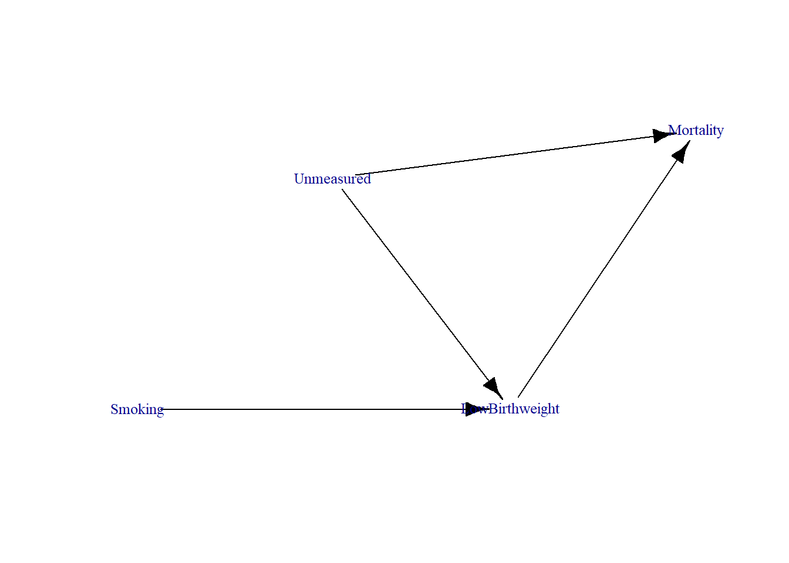
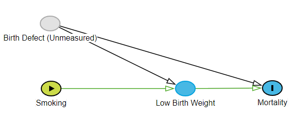
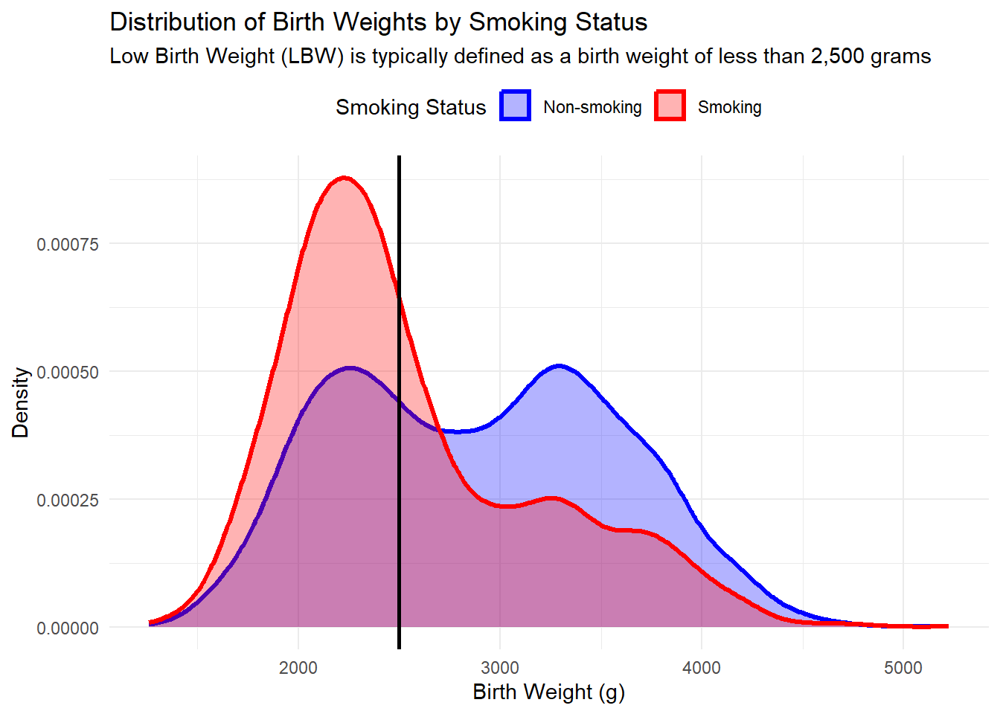
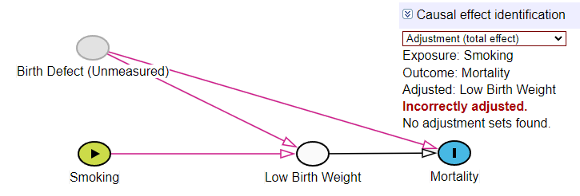
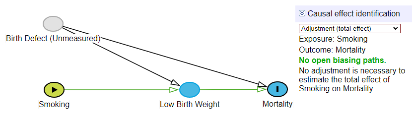
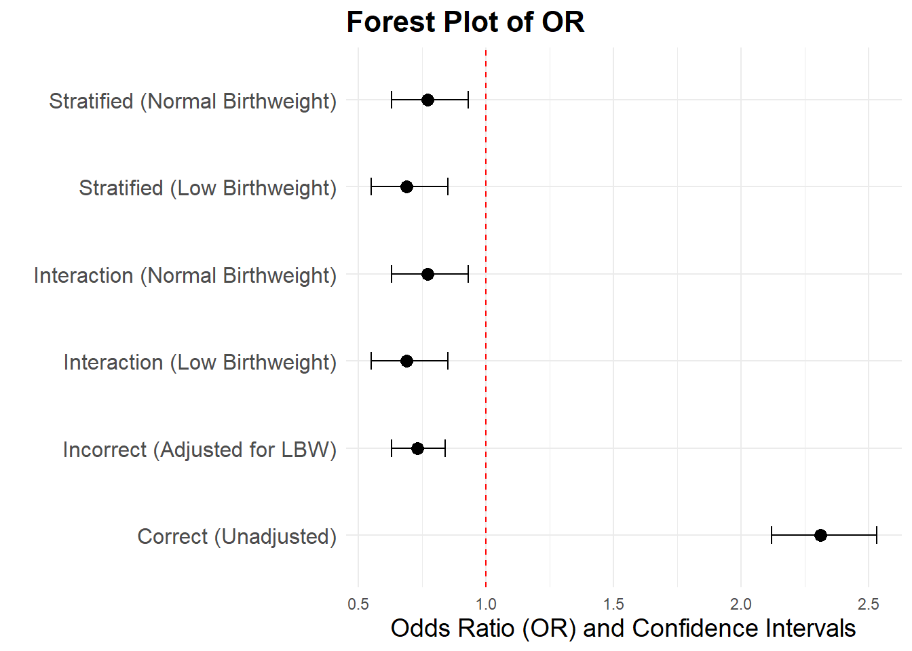

Simpson’s Paradox
Introduction
In this tutorial, we will use simcausal in R to simulate data and demonstrate how Simpson’s Paradox arises in a birthweight example similar to the “Birthweight Paradox” discussed by Hernández-Díaz et al. (2006). The paradox arises when adjusting for birthweight, leading to misleading conclusions about the relationship between maternal smoking and infant mortality. We will show how improper adjustment for birthweight, a collider in this context, can lead to biased estimates, and how to correct for this.
Birth Weight Paradox
Studies showed that while maternal smoking increased the risk of low birth weight (LBW) and infant mortality, among LBW infants, those born to smokers had lower infant mortality than LBW infants born to non-smokers. This seemingly paradoxical finding suggests that smoking could be “protective” for LBW infants, contradicting the established harmful effects of smoking during pregnancy.
This paradox is a classic example of Simpson’s Paradox, where stratifying by or conditioning on a variable (in this case, birthweight) can lead to paradoxical conclusions if the variable is a collider.
Data Generation
Setup
We will use the following R packages:
Data Generation
We will generate data to simulate the birthweight paradox. We assume that:
- Smoking influences Birthweight (low birth weight).
- Birthweight influences Infant Mortality.
- There are unmeasured factors (e.g., birth defects) that also influence both birthweight and infant mortality.
We will set up this data generating process using simcausal.
D <- DAG.empty()
D <- D +
node("Smoking", distr = "rbern", prob = 0.3) +
node("Unmeasured", distr = "rbern", prob = 0.2) +
node("LowBirthweight", distr = "rbern", prob = plogis(-1 + 1.5*Smoking + 2*Unmeasured)) +
node("Mortality", distr = "rbern", prob = plogis(-2 + 4*LowBirthweight + 4*Unmeasured))
Dset <- set.DAG(D)Visualizing the DAG
Let’s plot the DAG to see how these variables are related:
plotDAG(Dset, xjitter = 0.1, yjitter = 0.1,
edge_attrs = list(width = 1, arrow.width = 1, arrow.size = 1),
vertex_attrs = list(size = 15, label.cex = 0.8))
This DAG represents the relationships between maternal smoking, low birth weight, and mortality, with an unmeasured confounder affecting both birthweight and mortality. Low birth weight is a collider because it has two incoming arrows from both Smoking and Birth Defect (Unmeasured).

Understanding Collider Role
A collider is a variable that has two or more incoming arrows from other variables in a DAG. In simpler terms, a collider is influenced by two or more variables. When you condition on a collider (by adjusting for it in your analysis), you can introduce bias known as collider bias because you open a path between the variables that influence the collider, which might otherwise be independent.
A variable is a collider if it has two or more incoming arrows. In your DAG, low birth weight has two incoming arrows:
- One from Smoking.
- One from Unmeasured factors (e.g., birth defects).
Therefore, low birth weight is a collider in this DAG. Specifically, it is a collider between Smoking and Unmeasured factors.
Understanding Mediating Role
A mediator is a variable that lies on the causal path between two other variables (a topic for a different chapter). It transmits the effect of an independent variable on a dependent variable. Mediators are important because they explain part of the causal relationship between the independent and dependent variables. Adjusting for mediators can help understand indirect effects.
In this pathway, LowBirthweight is a mediator because it transmits the effect of Smoking on Mortality. In this context, LowBirthweight explains part of the mechanism by which Smoking increases the risk of Mortality (through its effect on birthweight). However, we would not be able to fully decompose the direct and indirect effects of Smoking on Mortality in the presence of the unmeasured variable (e.g., birth defects or another unobserved confounder), because this unmeasured variable creates confounding that affects both LowBirthweight and Mortality.
Simulate Data
We now simulate data based on the DAG structure.
sim_data <- sim(Dset, n = 10000, rndseed = 123)
#> simulating observed dataset from the DAG object
head(sim_data) %>%
kable("html", caption = "First 6 Rows of Simulated Data") %>%
kable_styling(bootstrap_options = c("striped", "hover", "condensed", "responsive"),
full_width = FALSE,
position = "center")| ID | Smoking | Unmeasured | LowBirthweight | Mortality |
|---|---|---|---|---|
| 1 | 0 | 0 | 1 | 1 |
| 2 | 1 | 0 | 1 | 1 |
| 3 | 0 | 1 | 1 | 1 |
| 4 | 1 | 0 | 1 | 1 |
| 5 | 1 | 0 | 0 | 0 |
| 6 | 0 | 0 | 0 | 0 |
Visualizing Hypothetical Distributions
# Simulate continuous birth weight based on binary LowBirthweight variable
set.seed(123)
sim_data$BirthWeight <- ifelse(sim_data$LowBirthweight == 1,
rnorm(n = sum(sim_data$LowBirthweight == 1),
mean = 2200, sd = 300), # Low birthweight
rnorm(n = sum(sim_data$LowBirthweight == 0),
mean = 3300, sd = 500)) # Normal birthweight
sim_data$Smoking <- factor(sim_data$Smoking,
levels = c(0, 1),
labels = c("Non-smoking", "Smoking"))
sim_data$LowBirthweight <- factor(sim_data$LowBirthweight,
levels = c(0, 1),
labels = c("Normal Birthweight", "Low Birthweight"))
# Create a density plot for birth weight distribution by smoking status
ggplot(sim_data, aes(x = BirthWeight, fill = Smoking, color = Smoking)) +
geom_density(alpha = 0.3, size = 1.2) +
geom_vline(xintercept = 2500, linetype = "solid", color = "black", size = 1) +
scale_fill_manual(values = c("Smoking" = "red", "Non-smoking" = "blue")) +
scale_color_manual(values = c("Smoking" = "red", "Non-smoking" = "blue")) +
labs(title = "Distribution of Birth Weights by Smoking Status",
subtitle = "Low Birth Weight (LBW) is typically defined as a birth weight of less than 2,500 grams",
x = "Birth Weight (g)",
y = "Density",
fill = "Smoking Status",
color = "Smoking Status") +
theme_minimal() +
theme(legend.position = "top")
Analysis
Crude Bivariate Relationships
# Calculate the summary statistics (mean birth weight, LBW prevalence, and mortality prevalence) by smoking status
summary_stats <- sim_data %>%
group_by(Smoking) %>%
summarise(
mean_birthweight = mean(BirthWeight, na.rm = TRUE), # Mean birth weight
prevalence_LBW = mean(LowBirthweight == "Low Birthweight") * 100, # Prevalence of LBW in percentage
prevalence_mortality = mean(Mortality) * 100 # Prevalence of mortality in percentage
) %>%
mutate(
mean_birthweight = format(round(mean_birthweight, 1), big.mark = ","), # Round and format birth weight
prevalence_LBW = round(prevalence_LBW, 1), # Round LBW prevalence to 1 decimal place
prevalence_mortality = round(prevalence_mortality, 1) # Round mortality prevalence to 1 decimal place
)
# Display the formatted table with kable
summary_stats %>%
kable("html", caption = "Summary Statistics: Mean Birth Weight, LowBirthWeight (LBW) Prevalence, and Mortality Prevalence") %>%
kable_styling(bootstrap_options = c("striped", "hover", "condensed", "responsive"),
full_width = FALSE,
position = "center")| Smoking | mean_birthweight | prevalence_LBW | prevalence_mortality |
|---|---|---|---|
| Non-smoking | 2,895.1 | 36.6 | 45.8 |
| Smoking | 2,552.5 | 67.9 | 66.2 |
Incorrect Adjustment: Conditioning on a Collider
We now show what happens when we adjust for LowBirthweight, which acts as a collider.
# Model adjusted for LowBirthweight (incorrect adjustment)
fit_incorrect <- glm(Mortality ~ Smoking + LowBirthweight, family = binomial(), data = sim_data)
publish(fit_incorrect, print = FALSE)$regressionTable %>%
kable("html", caption = "Adjusted Model Regression Table") %>%
kable_styling(bootstrap_options = c("striped", "hover", "condensed", "responsive"),
full_width = FALSE,
position = "center")| Variable | Units | OddsRatio | CI.95 | p-value |
|---|---|---|---|---|
| Smoking | Non-smoking | Ref | ||
| Smoking | 0.73 | [0.63;0.84] | <1e-04 | |
| LowBirthweight | Normal Birthweight | Ref | ||
| Low Birthweight | 59.40 | [51.75;68.18] | <1e-04 |
Explanation: Adjusting for the collider (Low Birthweight) leads to biased estimates of the effect of smoking on mortality. By conditioning on this collider, we are introducing a spurious association between Smoking and Birth Defect (Unmeasured).
Stratification
We will now stratify the data by Low Birthweight and calculate the effect of smoking on mortality separately for low birthweight and normal birthweight infants.
# Subset for low birthweight
fit_stratified_LBW <- glm(Mortality ~ Smoking, family = binomial(), data = subset(sim_data, LowBirthweight == "Low Birthweight"))
publish(fit_stratified_LBW, print = FALSE)$regressionTable %>%
kable("html", caption = "Stratified Model Regression Table") %>%
kable_styling(bootstrap_options = c("striped", "hover", "condensed", "responsive"),
full_width = FALSE,
position = "center")| Variable | Units | OddsRatio | CI.95 | p-value |
|---|---|---|---|---|
| Smoking | Non-smoking | Ref | ||
| Smoking | 0.69 | [0.55;0.85] | 0.000565 |
# Subset for normal birthweight
fit_stratified_NBW <- glm(Mortality ~ Smoking, family = binomial(), data = subset(sim_data, LowBirthweight == "Normal Birthweight"))
publish(fit_stratified_NBW, print = FALSE)$regressionTable %>%
kable("html", caption = "Stratified Model Regression Table") %>%
kable_styling(bootstrap_options = c("striped", "hover", "condensed", "responsive"),
full_width = FALSE,
position = "center")| Variable | Units | OddsRatio | CI.95 | p-value |
|---|---|---|---|---|
| Smoking | Non-smoking | Ref | ||
| Smoking | 0.77 | [0.63;0.93] | 0.007758 |
Interaction Approach
We include an interaction term between Smoking and LowBirthweight to test whether the effect of smoking on mortality differs by birthweight status.
fit_interaction <- glm(Mortality ~ Smoking * LowBirthweight, family = binomial(), data = sim_data)
publish(fit_interaction, print = FALSE)$regressionTable %>%
kable("html", caption = "Interaction Model Regression Table") %>%
kable_styling(bootstrap_options = c("striped", "hover", "condensed", "responsive"),
full_width = FALSE,
position = "center")| Variable | Units | OddsRatio | CI.95 | p-value |
|---|---|---|---|---|
| Smoking(Non-smoking): LowBirthweight(Low Birthweight vs Normal Birthweight) | 61.73 | [52.00;73.28] | < 1e-04 | |
| Smoking(Smoking): LowBirthweight(Low Birthweight vs Normal Birthweight) | 55.21 | [43.70;69.74] | < 1e-04 | |
| LowBirthweight(Normal Birthweight): Smoking(Smoking vs Non-smoking) | 0.77 | [0.63;0.93] | 0.007758 | |
| LowBirthweight(Low Birthweight): Smoking(Smoking vs Non-smoking) | 0.69 | [0.55;0.85] | 0.000565 |
Correct Approach: No Adjustment for LowBirthweight
Here, we show the correct approach, which is to avoid adjusting for the collider (LowBirthweight). This avoids the introduction of collider bias.
# Correct model (no adjustment for LowBirthweight)
fit_correct <- glm(Mortality ~ Smoking, family = binomial(), data = sim_data)
publish(fit_correct, print = FALSE)$regressionTable %>%
kable("html", caption = "Unadjusted Model Regression Table") %>%
kable_styling(bootstrap_options = c("striped", "hover", "condensed", "responsive"),
full_width = FALSE,
position = "center")| Variable | Units | OddsRatio | CI.95 | p-value |
|---|---|---|---|---|
| Smoking | Non-smoking | Ref | ||
| Smoking | 2.31 | [2.12;2.53] | <1e-04 |
Comparing Estimates
# Extract ORs from publish output for each model
or_incorrect <- publish(fit_incorrect, print = FALSE)$regressionTable[2, "OddsRatio"]
or_stratified_LBW <- publish(fit_stratified_LBW, print = FALSE)$regressionTable[2, "OddsRatio"]
or_stratified_NBW <- publish(fit_stratified_NBW, print = FALSE)$regressionTable[2, "OddsRatio"]
or_interaction1 <- publish(fit_interaction, print = FALSE)$regressionTable[3, "OddsRatio"]
or_interaction2 <- publish(fit_interaction, print = FALSE)$regressionTable[4, "OddsRatio"]

Now we compare the estimates from:
- The incorrect model (adjusted for LowBirthweight), with an OR of 0.73.
- The stratified model
- for low birthweight infants, with an OR of 0.69.
- for normal birthweight infants, with an OR of 0.77.
- The interaction model, where the OR for smokers is
- 0.69 (Low Birthweight),
- 0.77 (Normal Birthweight).
- The correct model (unadjusted for LowBirthweight), with an OR of 2.31.
These comparisons highlight how adjusting for a collider (Low Birthweight) introduces bias, while avoiding this adjustment gives an unbiased estimate of the effect of Smoking on Mortality.
Visualizing Estimates
# Helper function to clean and convert ORs and CIs
extract_or_ci <- function(or_str, ci_str) {
or_val <- ifelse(or_str == "Ref", NA, as.numeric(or_str)) # Convert OR to numeric, handle Ref
# Split the CI string, handle empty or malformed CI strings
if (ci_str != "" && grepl("\\[", ci_str)) {
ci_vals <- as.numeric(gsub("\\[|\\]", "", unlist(strsplit(ci_str, ";")))) # Split and convert CI
} else {
ci_vals <- c(NA, NA) # Handle missing CIs
}
return(list(OR = or_val, CI.lower = ci_vals[1], CI.upper = ci_vals[2]))
}
# Extract ORs and CIs for each model using the helper function
or_ci_incorrect <- extract_or_ci(publish(fit_incorrect, print = FALSE)$regressionTable[2, "OddsRatio"],
publish(fit_incorrect, print = FALSE)$regressionTable[2, "CI.95"])
or_ci_stratified_LBW <- extract_or_ci(publish(fit_stratified_LBW, print = FALSE)$regressionTable[2, "OddsRatio"],
publish(fit_stratified_LBW, print = FALSE)$regressionTable[2, "CI.95"])
or_ci_stratified_NBW <- extract_or_ci(publish(fit_stratified_NBW, print = FALSE)$regressionTable[2, "OddsRatio"],
publish(fit_stratified_NBW, print = FALSE)$regressionTable[2, "CI.95"])
or_ci_interaction1 <- extract_or_ci(publish(fit_interaction, print = FALSE)$regressionTable[3, "OddsRatio"],
publish(fit_interaction, print = FALSE)$regressionTable[3, "CI.95"])
or_ci_interaction2 <- extract_or_ci(publish(fit_interaction, print = FALSE)$regressionTable[4, "OddsRatio"],
publish(fit_interaction, print = FALSE)$regressionTable[4, "CI.95"])
or_ci_correct <- extract_or_ci(publish(fit_correct, print = FALSE)$regressionTable[2, "OddsRatio"],
publish(fit_correct, print = FALSE)$regressionTable[2, "CI.95"])# Step 2: Create a data frame for the forest plot
forest_data <- data.frame(
Model = c("Incorrect (Adjusted for LBW)",
"Stratified (Low Birthweight)",
"Stratified (Normal Birthweight)",
"Interaction (Low Birthweight)",
"Interaction (Normal Birthweight)",
"Correct (Unadjusted)"),
OR = c(or_ci_incorrect$OR, or_ci_stratified_LBW$OR, or_ci_stratified_NBW$OR, or_ci_interaction2$OR, or_ci_interaction1$OR, or_ci_correct$OR),
CI.lower = c(or_ci_incorrect$CI.lower, or_ci_stratified_LBW$CI.lower, or_ci_stratified_NBW$CI.lower, or_ci_interaction2$CI.lower, or_ci_interaction1$CI.lower, or_ci_correct$CI.lower),
CI.upper = c(or_ci_incorrect$CI.upper, or_ci_stratified_LBW$CI.upper, or_ci_stratified_NBW$CI.upper, or_ci_interaction2$CI.upper, or_ci_interaction1$CI.upper, or_ci_correct$CI.upper)
)
# Display the data frame to ensure it's correct
print(forest_data)
#> Model OR CI.lower CI.upper
#> 1 Incorrect (Adjusted for LBW) 0.73 0.63 0.84
#> 2 Stratified (Low Birthweight) 0.69 0.55 0.85
#> 3 Stratified (Normal Birthweight) 0.77 0.63 0.93
#> 4 Interaction (Low Birthweight) 0.69 0.55 0.85
#> 5 Interaction (Normal Birthweight) 0.77 0.63 0.93
#> 6 Correct (Unadjusted) 2.31 2.12 2.53# Create the forest plot
ggplot(forest_data, aes(x = OR, y = Model)) +
geom_point(size = 3) +
geom_errorbarh(aes(xmin = CI.lower, xmax = CI.upper), height = 0.2) +
geom_vline(xintercept = 1, linetype = "dashed", color = "red") + # Reference line at OR = 1
labs(title = "Forest Plot of OR",
x = "Odds Ratio (OR) and Confidence Intervals",
y = "") +
theme_minimal() +
theme(axis.text.y = element_text(size = 12),
axis.title.x = element_text(size = 14),
plot.title = element_text(size = 16, face = "bold"))
Simpson’s Paradox in the Current Example
Simpson’s Paradox occurs when the relationship between two variables changes direction when data is stratified by a third variable. In our case, we observe this paradox when examining the effect of maternal smoking on infant mortality, particularly in relation to birth weight.
- Initially, the crude analysis shows that smoking increases the overall risk of mortality.
- However, when we stratify by birth weight, a seemingly paradoxical result emerges: among low birthweight (LBW) infants, those born to smokers appear to have lower mortality than those born to non-smokers.
This misleading association suggests that smoking is “protective” for LBW infants, which contradicts well-established evidence that smoking during pregnancy is harmful.
The reason for this paradox is that birth weight acts as a collider in this causal pathway. Both smoking and unmeasured factors (such as birth defects) influence birth weight, and birth weight itself is a strong predictor of mortality. By conditioning on or adjusting for birth weight, we introduce bias that distorts the true relationship between smoking and infant mortality. This paradox demonstrates the importance of using causal diagrams, such as DAGs, to avoid improper adjustment and accurately infer causal relationships.
Conclusion
- Key Insight: Avoid adjusting for colliders when estimating causal effects. Use tools like DAGs to identify colliders and confounders in your model.
- Correct Approach: When analyzing the effect of Smoking on Mortality, do not adjust for Low Birthweight as it is a collider.
By avoiding collider bias, we ensure accurate causal inferences.